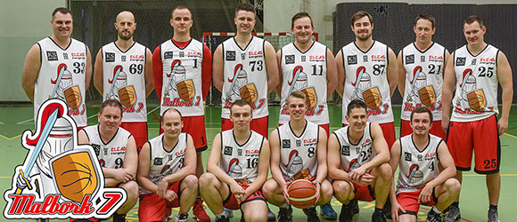

Zainteresowania
Sport
Sport był na drugim miejscu. W całym swoim życiu opuściłem wiele lekcji WF-u. Ważniejsze dla mnie było nabycie innych umiejętności. Choćby takich jak programowanie w języku JS. Co praktykuję do dzisiaj.
Programowanie

Gdy miałem 9 lat dostałem swój pierwszy komputer na Mikołaja. Kilka miesięcy później kolega pokazał mi swoją stronę internetową. Pamiętam tylko, że były tam przechodzące napisy przy użyciu znaczników marquee. Zainspirował mnie i w niedalekim czasie sam zrobiłem swoją pierwszą stronę internetową.
Gry komputerowe

Nieodłączny element mojego życia. Fascynacja grami: Call of Duty, Far Cry, Need for Speed, TrackMania, WatchDogs, Grand Theft Auto, Forge of Empire, Atheltics Mania etc